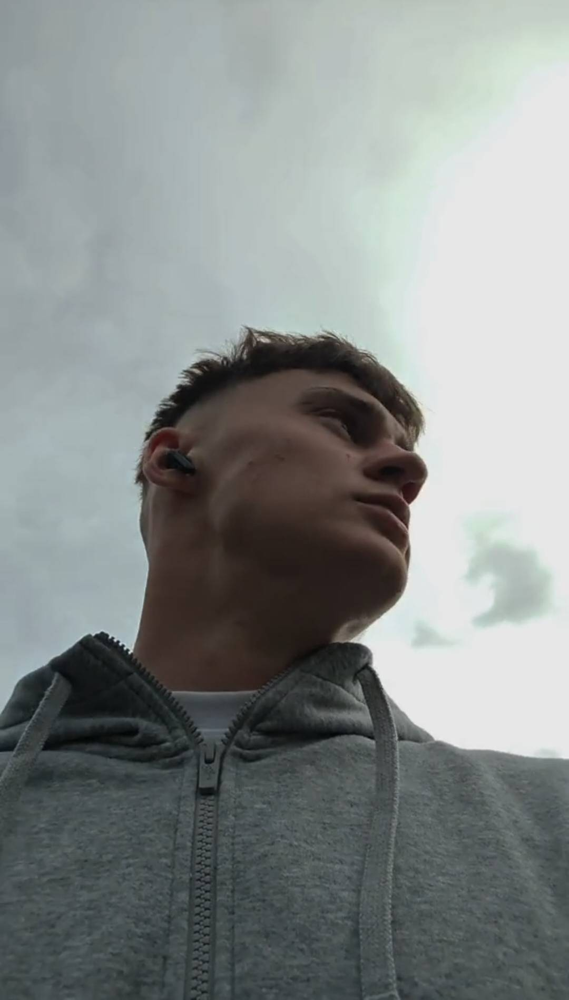
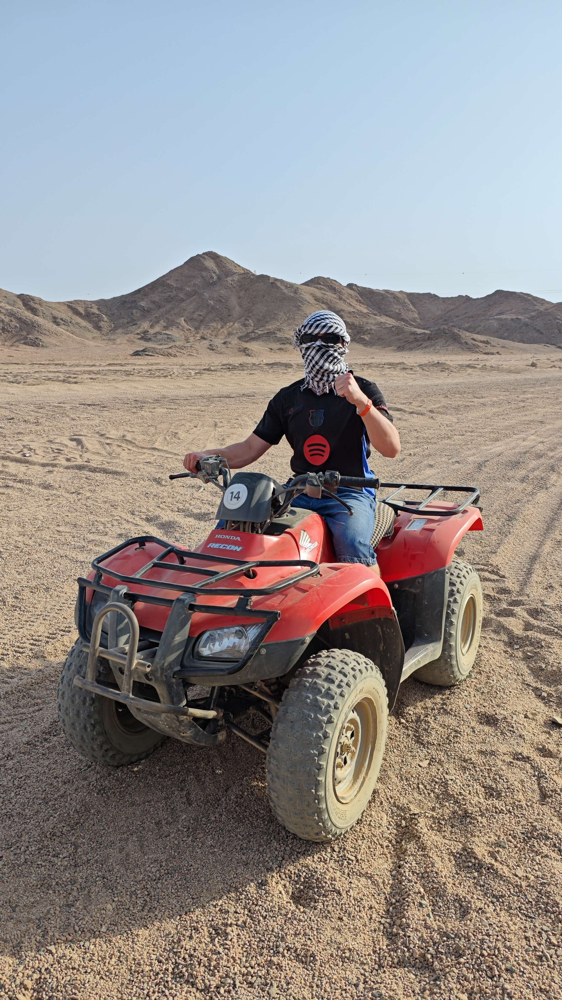
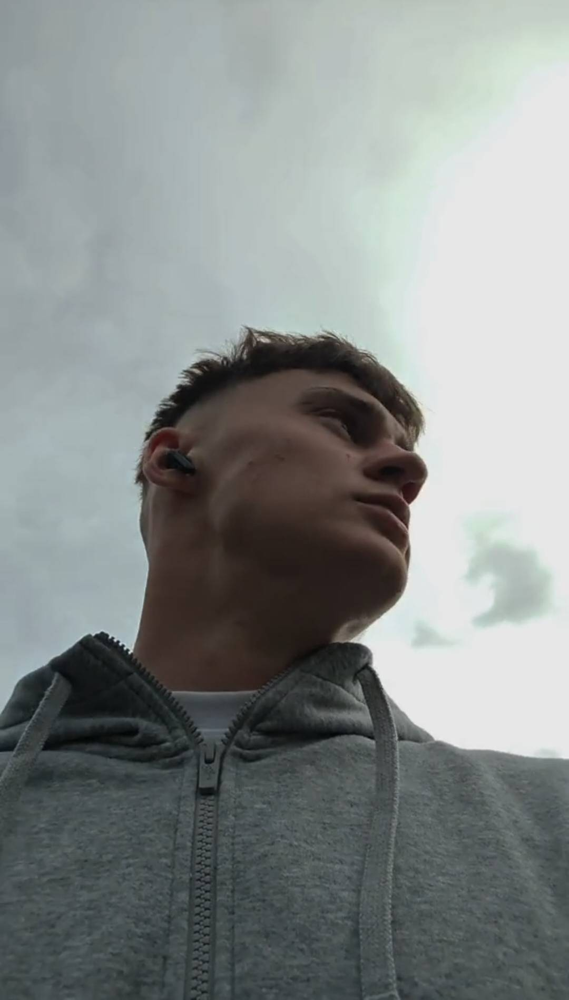
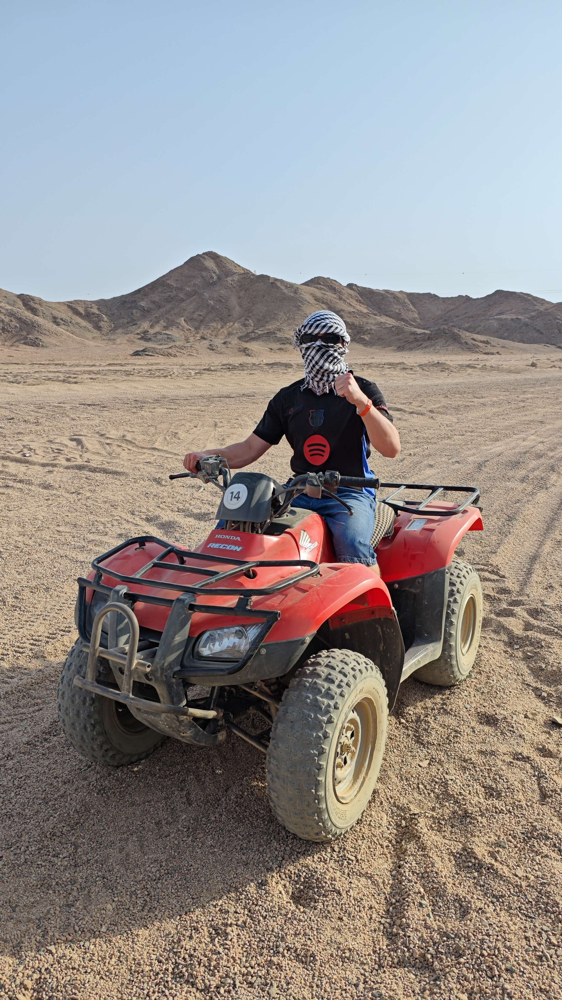

Tomáš Sklenář
STUDENT · PROGRAMÁTOR · CESTOVATEL
O mně
Charakteristika
Jmenuji se Tomáš Sklenář, je mi 17 let a studuji Kybernu (Střední školu a vyšší odbornou školu aplikované kybernetiky).
Jako menší jsem chtěl být architektem, pravděpodobně proto, že jsem hodně hrával Minecraft a stavěl si vlastní města. Později, zhruba v 6.-7. třídě, mě začaly více bavit počítače a technika obecně. Začínal jsem v minecraftu se zkoušením commandů a hraním si s command blockem.
Na základní škole jsem navštěvoval školní kroužek informatiky, kde jsme pracovali například ve Scratchi a také s Ozoboty.

 



Moje cesta k IT
K IT jsem se dostal postupně a přirozeně. Ze začátku mě bavilo především tvoření a kreativita, kterou jsem rozvíjel například při hraní her jako Minecraft, kde jsem stavěl vlastní světy a města. Postupem času jsem si začal uvědomovat, že mě zajímá nejen výsledek, ale i to, jak věci fungují na pozadí. Jaký proces probíhá na pozadí, od stisknutí tlačítka až po samotné položení bloku.
Na základní škole jsem navštěvoval kroužek informatiky, kde jsem se poprvé setkal se základy programování ve Scratchi a prací s roboty Ozobot, což jsou roboti, kteří se pohybují po čáře a reagují na barvy. Tyto aktivity mi pomohly rozvíjet logické myšlení a zájem o technologie. Postupně jsem se začal více orientovat na práci s počítači a softwarem, což mě přivedlo ke studiu aplikované kybernetiky.
Koníčky
Volný čas a zájmy
Ve volném čase se snažím udržovat rovnováhu mezi prací na počítači a aktivním pohybem. Sport a fyzická aktivita jsou pro mě důležitou součástí života, pomáhají mi vyčistit hlavu, zlepšovat kondici a udržovat disciplínu, kterou pak přenáším i do práce a studia.
Od dětství jsem vyzkoušel mnoho sportů. Pravidelně navštěvuji posilovnu, běhám, jezdím na kole a věnuji se bojovým sportům. V minulosti jsem pět let plaval, hrál fotbal, několik let se věnoval parkouru a čtyři roky jsem závodně skákal na trampolínách, kde jsem se naučil práci s vlastním tělem, koordinaci a odvahu.
V zimní sezóně jsem se dlouhodobě věnoval freestyle lyžování na závodní úrovni. Po zranění vybavení jsem přešel na snowboard, kterému se nyní aktivně učím a trénuji ho především na horách.


Brigády a pracovní zkušenosti
Během studia jsem měl možnost vyzkoušet si několik brigád, které mi daly cenné zkušenosti nejen po pracovní, ale i osobní stránce.
FC Slovan Liberec, a.s.
Pracoval jsem na různých pozicích během domácích zápasů a marketingových akcí:
- Maskot - vystupování před lidmi, práce s publikem, improvizace
- Fanshop - práce s reklamním zbožím a komunikace s fanoušky
- Security - zodpovědnost, spolupráce v týmu, práce ve stresových situacích
Centrum Babylon, a.s.
V Centru Babylon jsem působil především v marketingu:
Maskot („opičák“) na marketingových akcích, vystupování na veřejnosti, tanec, parkourové prvky a akrobatické triky.
Díky této práci jsem se mohl zúčastnit workshopu s Tarym, kde jsem přímo v kostýmu předváděl parkourové prvky, salta a pohybové dovednosti. Na základě této zkušenosti jsem byl přijat jako instruktor na Tary Camp. Za svůj přístup a pracovní nasazení jsem byl navíc oceněn vedením Centra Babylon jako Zaměstnanec měsíce.
Během Halloweenu jsem si také vyzkoušel roli strašidla v strašidelném labyrintu, což byla netradiční, ale velmi zábavná zkušenost.
Další zkušenosti
Krátce jsem si vyzkoušel také práci číšníka / barmana v restauraci. I když to nebyla práce, u které bych chtěl zůstat dlouhodobě, pomohla mi poznat provoz gastronomie, práci s lidmi a fungování pod tlakem.
Volný čas dnes
Ve volném čase trávím hodně času u počítače, především když není ideální počasí. Věnuji se hrám s přáteli, projektům a technologiím. Když to jde, jsem ale raději venku - s přáteli nebo rodinou, na výletech, na kole nebo na horách.
Cestování je pro mě důležitý zdroj inspirace. V zimě vyrážím hlavně za horami a snowboardem, v létě pak za mořem nebo poznáváním nových míst.
Používám snowboard Bataleon Evil Twin+ (2025), boty Vans Aura pro boa a vázání Union Strata limitovaná edice cobra dogs.
Na snowboardu mě nejvíc inspirují jezdci, kteří kombinují techniku, styl a kreativitu. Mým velkým vzorem je Zeb Powell, který je známý svým originálním freestyle stylem snowboardingu a neotřelým, hravým stylem. Zároveň obdivuji Chloe Kim, především pro její technickou preciznost, konzistenci a schopnost podávat špičkové výkony na nejvyšší úrovni. Oba mě motivují posouvat se dál, zlepšovat se a hledat vlastní styl na snowboardu.
Kam směřuji
V současnosti se nejvíce zajímám o oblast informačních technologií, především o tvorbu webových stránek, programování a práci s moderními technologiemi. Zatím přesně nevím, jakým směrem se v budoucnu vydám, protože svět IT nabízí mnoho možností a neustále se vyvíjí.
Baví mě objevovat nové věci, zkoušet různé projekty a postupně zjišťovat, co mi dává největší smysl. Rád propojuji technické znalosti s kreativitou a hledám způsoby, jak vytvářet věci, které mají reálné využití.
Do budoucna bych se chtěl neustále zlepšovat, učit se nové technologie a pracovat na projektech, které mě budou posouvat dál, jak po technické, tak po osobní stránce.